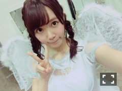
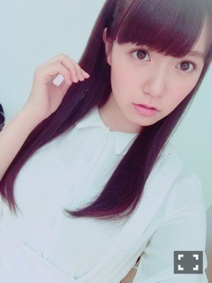
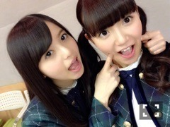
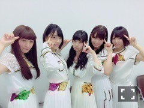

| 2015/11 06 Fri | ひめたん-0o0-その586 |
火曜日は個別握手会でした！
遊びに来てくださったみなさん
本当にありがとう＼(^o^)／

天使！
この格好でラジオしてました
2部では天使の輪つけてたんだけど
3部の前に取っちゃった。
思ってたより真っ白なんだねって言われた
写真で見るのと実際違うことあるよね～
13th初の個別握手会ということで
初めましての方が多くて嬉しかった♡
しかもみなさん
「らじらー聞いて来ました！！」って
言ってくれてそれもまた嬉しい。
らじらーはいろんなメディアの中でも
1番素を出せるような気がするから、
というかリラックスして喋ってるから
そのらじらーで私を知ってくれたことが
本当に嬉しいなっていうのと
あとは単純に私ラジオが好きな人間なので
もしかしてひめレーンに来る人は
ラジオ好きな人多いのかな？
それとも頑張って聞いてくれたのかな？と。
どちらにせよ嬉しいです(^▽^)嬉しい連呼！
いつも来てくれてる人にも
改めてありがとうがたくさん言えて
やっぱり握手会っていいなって思いました。
Wセンター、ユニット、ソニレコMC......
他にもたくさんおめでとうって
言ってもらっちゃったo(^▽^)o
昔と比べて
話のトピックが増えたなって思って、
きっとそれだけ色んなお仕事を
させていただけてるんだなって思って、
いやあ......ありがたいことですね。
あと、らじらーのおかげで
無茶振りが増えましたが
以前より果敢に挑むようになりました
今回は赤ちゃんが多かったです。ばぁぶ！
あと私服も好評で嬉しかった♡
最近私服を褒められることが増えたよ
昔の汚名をちょっとずつ
払拭してるよ！
写メ撮ってなくてごめん( ´ ･ω･ ` )
上下共にROJITAでした～
どんなのか覚えてる人がもしいたら
ふーんって思ってもらえれば。
13thの楽曲好きだから
会場内でずっと流れてるの聞いてて
何だか幸せだった～＊
みなさんにとってもそうだといいな。
次回11/22は
12thラストの個別握手会です
レーン編成お間違いのなきように！

本日から配信始まりました
「ソニレコ！暇つぶしTV」
Kちゃんとじょ～んとおひめちゃんとで
ゆっる～く楽しい時間をみなさんに
お届けしていけたらなと。
名前の通り、レーベルメイトである
ソニーミュージックのアーティストさんを
毎月お迎えします( ˇωˇ )
毎週金曜日に更新されます
チャンネル登録よろしくね☆
こちらから↓
今までのソニレコファンの皆様にはもちろん、
さらにたくさんの人に
愛される番組になったらいいな♡
おたよりもお待ちしております～

お知らせ！
マサカメTVに出演します＼(^o^)／
4月に一度呼んでいただいたんだけれど
すごく楽しかったので
また出演できるなんて嬉しい～！
11/14 18時10分～18時42分
11/20 2時20分～2時55分(木曜深夜)(再)
観てね！よろしくお願いします！タクシー！
前回の日記に
あすかちゃんとの写真を貼ったんだけれど
見れなかったよね。
たくさんコメントで教えてくれてて
気づきました( >_< )ごめんね
こっちだと枚数制限があるので
めーるで送り直ししました
今日は別の。今度は大丈夫だと思う。

発売中のブブカ12月号
よろしくお願いします！
日曜日の工事中も
是非観ていただきたいです！
来週は名古屋で公開収録です！
あ、ついに念願叶って
サンエトちゃんでご飯行ってきたよ♡
前にらじらーで
いつか行きたいねって話をしてたから
やっと行けましたという報告です
みんなそれぞれのポジションで
いろんな景色を見てきて
今回こうして巡り合った5人なんだなって
思うとなんだか愛しくなりました。
喋り出すととまんなくて
熱い子たちの集まりだな～と改めて。

全握楽しみ！
(＊´・ω・＊)
コメント(765)
2015/11/06 23:30